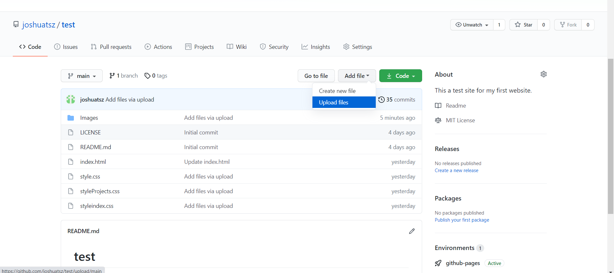
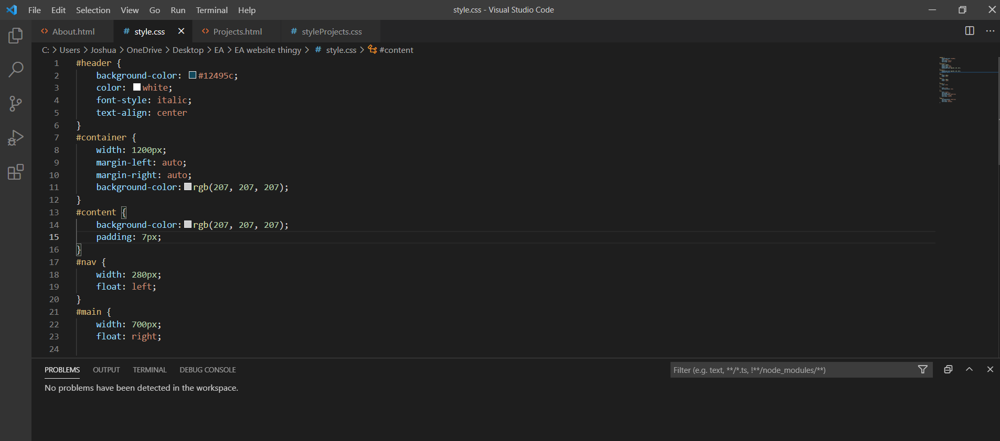
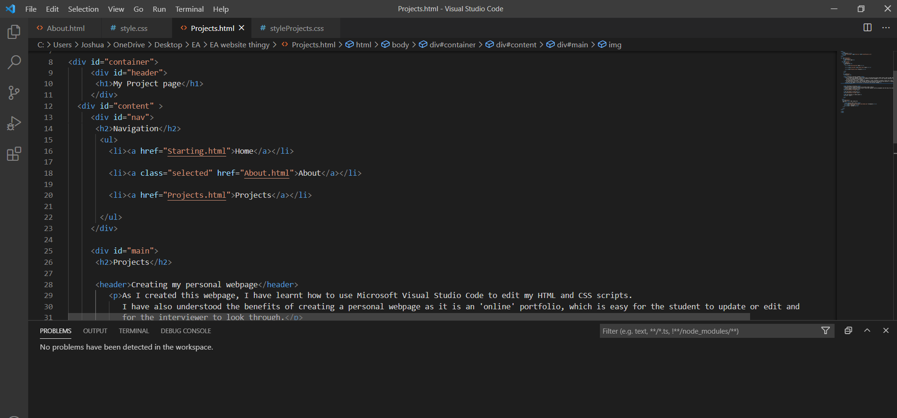
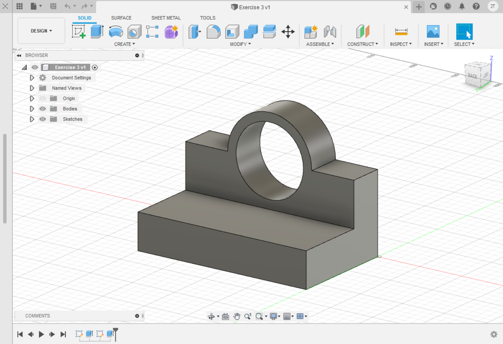
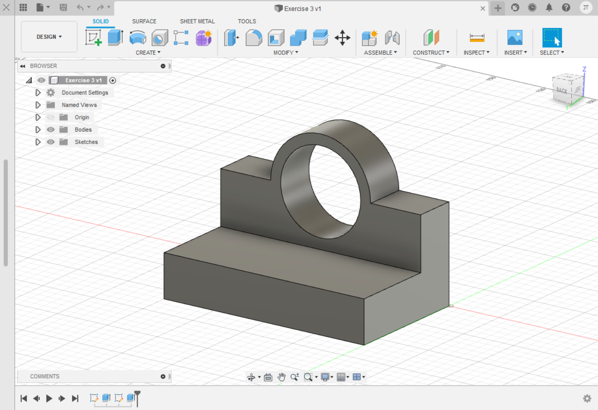
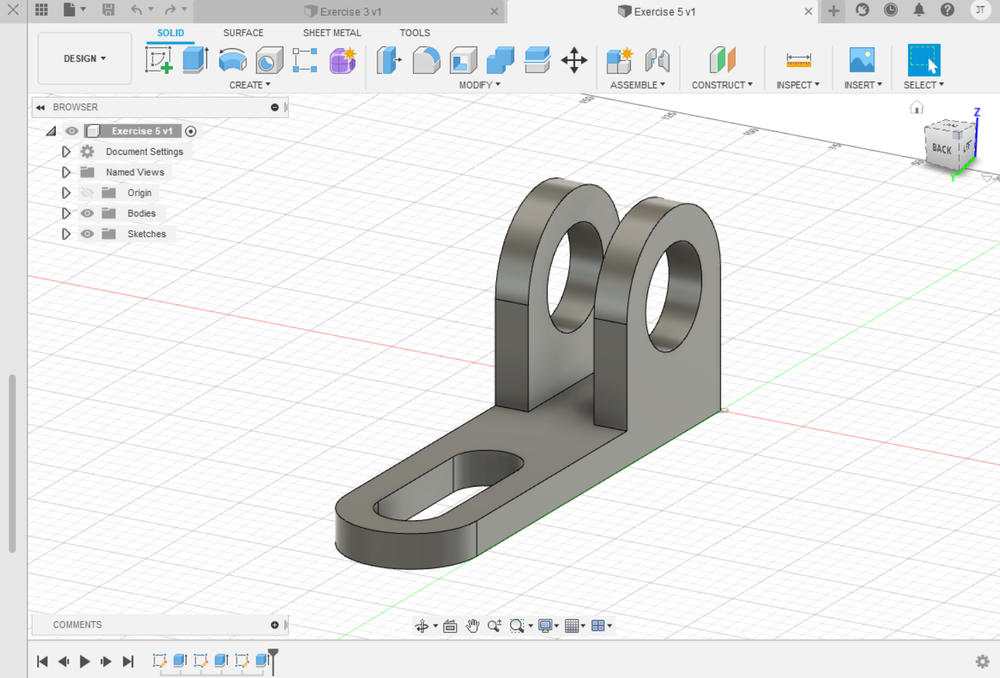
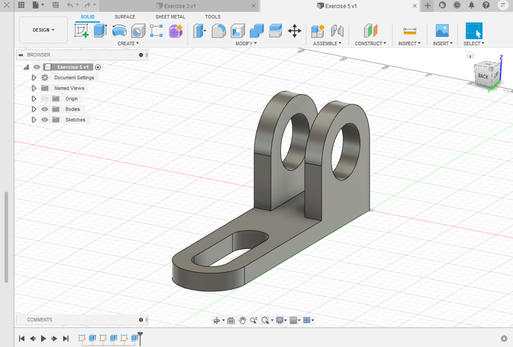
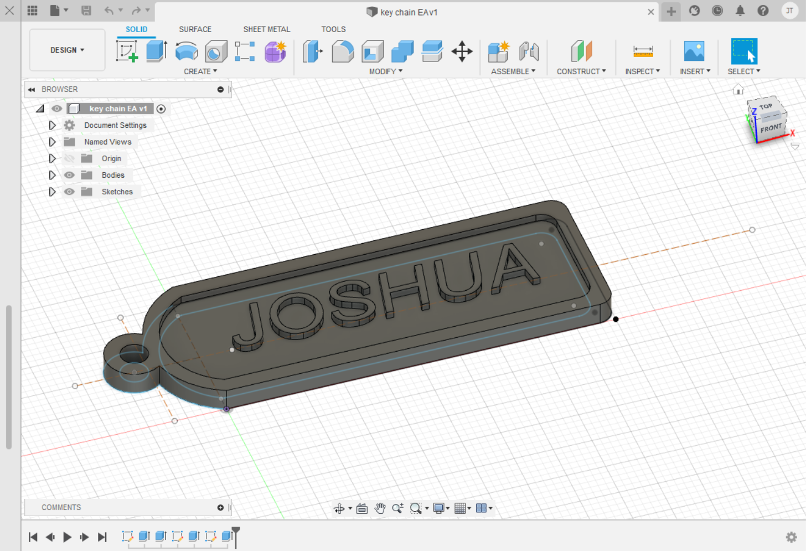
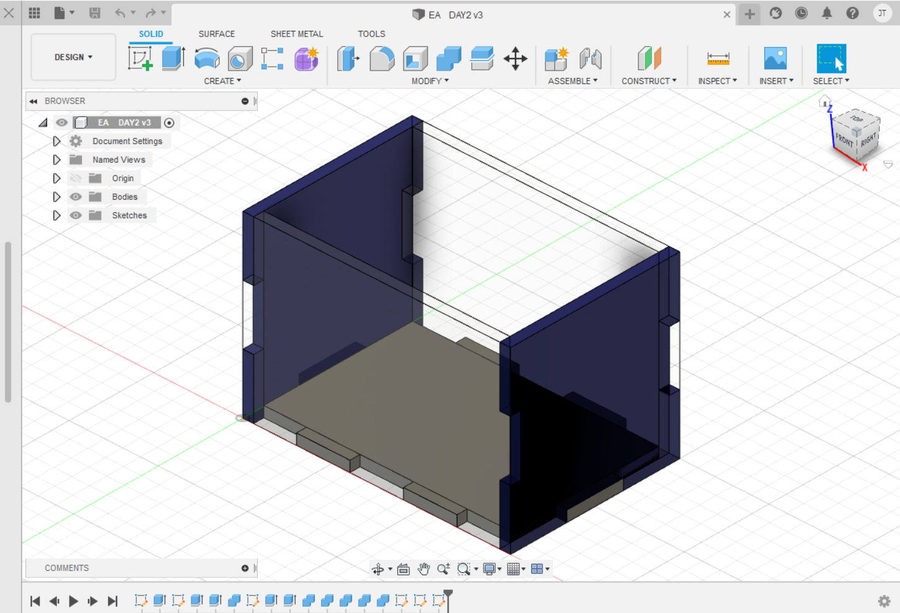

Projects
As I created this webpage, I have learnt how to use Microsoft Visual Studio Code to edit my HTML and CSS scripts, I also used Github to upload my webpage. I have also understood the benefits of creating a personal webpage as it is an 'online' portfolio, which is easy for the student to update or edit and for the interviewer to look through.
The experience I had when i created this webpage is rather enjoyable as seeing it gives you a sense of pride and accomplishment. It may be difficult at first as I am new to creating a website but through the learning materials provided by the lecturers, I have learnt how to decorate my webpage with a CSS script, upload images and content in my HTML script.
This are the images of the process in creating my own personal webpage, which are mainly images of my coding.
During the first hands-on-session on the 29th & 30th of March, I have used Fusion360 to create 5 different designs which I have done together with my groupmates and the help of my lecturers.
The 1st design is Exercise 3
 

The 2nd design is Exercise 5
 

The 3rd design is a chess piece

The 4th design is a Keychain with my name engraved on it. During the hands-on-session, I actually got the chance to 3D print my keychain through the use of an app, Ultimaker Cura ver 4.8.0, as well as learning how to use it for future projects.
.png)
The last design is a box which is supposed to be cut out from wood using the 2D laser cutter unlike the other 4 designs which is created through the 3D printer.
This is the design of the t-shirt